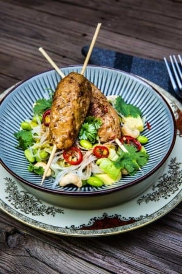

Heta asiatiska köttfärsspett med nudelsallad
För: 4 personer
Köttfärsspett:
- 600g blandfärs
- 2 msk hackat citrongräs
- 1 röd chilifrukt
- salt, peppar
Nudelsallad:
- 300g vitkål
- 3 msk flytande smör
- 1 msk äppelcidervinäger
- salt
- 200g glasnudlar
- 250g frysta sojabönor
- 1 dl cashewnötter
- 2 avokado
- 1 kruka koriander
- japansk soja
- sesamolja

- Hacka citrongräs och chili (gillar du het mat har du i mer chili). Blanda med färsen samt salt och peppar. Forma färsen till rullar och stek dem i smör. Trä i ett spett i varje färsrulle efter stekningen.
- Strimla vitkål och fräs det i en stekpanna tillsammans med smör i cirka 3 minuter. Slå på vinägern mot slutet och låt det fräsa bort. Salta ett varv och ställ åt sidan.
- Tillaga glasnudlarna enligt anvisningen på förpackningen. Tina sojabönorna i varmt vatten. Grovhacka cashewnötter och tärna avokado.
- Blanda stekt vitkål med glasnudlar, sojabönor, cashewnötter och avokado. Servera med färsk koriander, soja och sesamolja.